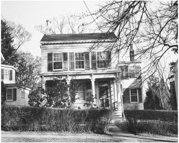

112 Mercer Street
Princeton
The ocean liner Westmoreland, which carried Einstein, at age 54, to what would become his new home country, arrived in New York Harbor on October 17, 1933. Waiting to meet him in the rain at the Twenty-third Street pier was an official committee led by his friend Samuel Untermyer, a prominent attorney, who carried some orchids he had grown, plus a group of cheerleaders that was scheduled to parade with him to a welcoming pageant.
Einstein and his entourage, however, were nowhere to be found. Abraham Flexner, the director of the Institute for Advanced Study, was obsessed with shielding him from publicity, whatever Einstein’s quirky preferences might be. So he had sent a tugboat, with two Institute trustees, to spirit Einstein away from the Westmoreland as soon as it cleared quarantine. “Make no statement and give no interviews on any subject,” he had cabled. To reiterate the message, he sent a letter with one of the trustees who greeted Einstein’s ship. “Your safety in America depends upon silence and refraining from attendance at public functions,” it said.1
Carrying his violin case, with a profusion of hair poking out from a wide-brimmed black hat, Einstein surreptitiously disembarked onto the tug, which then ferried him and his party to the Battery, where a car was waiting to whisk them to Princeton. “All Dr. Einstein wants is to be left in peace and quiet,” Flexner told reporters.2
Actually, he also wanted a newspaper and an ice cream cone. So as soon as he had checked into Princeton’s Peacock Inn, he changed into casual clothes and, smoking his pipe, went walking to a newsstand, where he bought an afternoon paper and chuckled over the headlines about the mystery of his whereabouts. Then he walked into an ice cream parlor, the Baltimore, pointed his thumb at the cone a young divinity student had just bought, and then pointed at himself. As the waitress made change for him, she announced, “This one goes in my memory book.”3
Einstein was given a corner office in a university hall that served as the temporary headquarters of the Institute. There were eighteen scholars in residence then, including the mathematicians Oswald Veblen (nephew of the social theorist Thorstein Veblen) and John von Neumann, a pioneer of computer theory. When shown his office, he was asked what equipment he might need. “A desk or table, a chair, paper and pencils,” he replied. “Oh yes, and a large wastebasket, so I can throw away all my mistakes.”4
He and Elsa soon found a house to rent, which they celebrated by hosting a small musical recital featuring the works of Haydn and Mozart. The noted Russian violinist Toscha Seidel played lead, with Einstein as second fiddle. In return for some violin tips, Einstein tried to explain relativity theory to Seidel and made him some drawings of moving rods contracting in length.5
Thus began a proliferation of popular tales in town about Einstein’s love for music. One involved Einstein playing in a quartet with violin virtuoso Fritz Kreisler. At a certain point they got out of sync. Kreisler stopped playing and turned to Einstein in mock exasperation. “What’s the matter, professor, can’t you count?”6 More poignantly, there was an evening where a Christian prayer group gathered to make intercessions for persecuted Jews. Einstein surprised them by asking if he could come. He brought his violin and, as if offering a prayer, played a solo.7
Many of his performances were purely impromptu. That first Halloween, he disarmed some astonished trick-or-treaters, a group of 12-year-old girls who had come with the intent of playing a prank, by appearing at the door and serenading them with his violin. And at Christmastime, when members of the First Presbyterian Church came by to sing carols, he stepped out into the snow, borrowed a violin from one of the women, and accompanied them. “He was just a lovely person,” one of them recalled.8
Einstein soon acquired an image, which grew into a near legend but was nevertheless based on reality, of being a kindly and gentle professor, distracted at times but unfailingly sweet, who wandered about lost in thought, helped children with their homework, and rarely combed his hair or wore socks. With his amused sense of self-awareness, he catered to such perceptions. “I’m a kind of ancient figure known primarily for his non-use of socks and wheeled out on special occasions as a curiosity,” he joked. His slightly disheveled appearance was partly an assertion of his simplicity and partly a mild act of rebellion. “I have reached an age when, if someone tells me to wear socks, I don’t have to,” he told a neighbor.9
His baggy, comfortable clothes became a symbol of his lack of pretense. He had a leather jacket that he tended to wear to events both formal and informal. When a friend found out that he had a mild allergy to wool sweaters, she went to a surplus store and bought him some cotton sweatshirts, which he wore all the time. And his dismissive attitude toward haircuts and grooming was so infectious that Elsa, Margot, and his sister, Maja, all sported the same disheveled gray profusion.
He was able to make his rumpled-genius image as famous as Chaplin did the little tramp. He was kindly yet aloof, brilliant yet baffled. He floated around with a distracted air and a wry sensibility. He exuded honesty to a fault, was sometimes but not always as naïve as he seemed, cared passionately about humanity and sometimes about people. He would fix his gaze on cosmic truths and global issues, which allowed him to seem detached from the here and now. This role he played was not far from the truth, but he enjoyed playing it to the hilt, knowing that it was such a great role.
He had also, by then, adapted willingly to the role Elsa played, that of a wife who could be both doting and demanding, protective yet afflicted with occasional social aspirations. They had grown comfortable together, after some rough patches. “I manage him,” she said proudly, “but I never let him know that I manage him.”10
Actually, he knew, and he found it mildly amusing. He surrendered, for example, to Elsa’s nagging that he smoked too much and on Thanksgiving bet her that he would be able to abstain from his pipe until the new year. When Elsa boasted of this at a dinner party, Einstein grumbled, “You see, I am no longer a slave to my pipe, but I am a slave to that woman.” Einstein kept his word, but “he got up at daylight on New Year’s morning, and he hasn’t had his pipe out of his mouth since except to eat and sleep,” Elsa told neighbors a few days after the deal was over.11
The greatest source of friction for Einstein came from Flexner’s desire to protect him from publicity. Einstein was, as always, less fastidious about this than were his friends, patrons, and self-appointed protectors. An occasional flash of the limelight made his eyes twinkle. More important, he was willing and even eager to endure such indignities if he could use his fame to raise money and sympathy for the worsening plight of European Jews.
Such political activism made Einstein’s penchant for publicity even more disconcerting to Flexner, an old-line and assimilated American Jew. It might provoke anti-Semitism, he thought, especially in Princeton, where the Institute was luring Jewish scholars into an environment that was, to say the least, socially wary of them.12
Flexner was particularly upset when Einstein, quite charmingly, agreed one Saturday to meet at his home with a group of boys from a Newark school who had named their science club after him. Elsa baked cookies, and when the discussion turned to Jewish political leaders, she noted, “I don’t think there is any anti-Semitism in this country.” Einstein agreed. It would have amounted to no more than a sweet visit, except that the adviser who accompanied the boys wrote a colorful account, focusing on Einstein’s thoughts about the plight of Jews, that was bannered atop the front page of the Newark Sunday Ledger.13
Flexner was furious. “I simply want to protect him,” he wrote in a sharp letter to Elsa, and he sent the Newark article to her with a stern note attached. “This is exactly the sort of thing that seems to me absolutely unworthy of Professor Einstein,” he scolded. “It will hurt him in the esteem of his colleagues, for they will believe that he seeks such publicity, and I do not see how they can be convinced that such is not the case.”14
Flexner went on to ask Elsa to dissuade her husband from being featured at a scheduled musical recital in Manhattan, which he had already accepted, that was to raise money for Jewish refugees. But like her husband, Elsa was not totally averse to publicity, nor to helping Jewish causes, and she resented Flexner’s attempts at control. So she replied with a very frank refusal.
That provoked Flexner to send an astonishingly blunt letter the next day, which he noted he had discussed with the president of Princeton University. Echoing the sentiments of some of Einstein’s European friends, including the Borns, Flexner warned Elsa that if Jews got too much publicity it would stoke anti-Semitism:
It is perfectly possible to create anti-Semitic feeling in the United States. There is no danger that any such feeling would be created except by the Jews themselves. There are already signs which are unmistakable that anti-Semitism has increased in America. It is because I am myself a Jew and because I wish to help oppressed Jews in Germany that my efforts, though continuous and in a measure successful, are absolutely quiet and anonymous . . . The questions involved are the dignity of your husband and the Institute according to the highest American standards and the most effective way of helping the Jewish race in America and in Europe.15
That same day, Flexner wrote Einstein directly to make the case that Jews like themselves should keep a low profile because a penchant for publicity could arouse anti-Semitism. “I have felt this from the moment that Hitler began his anti-Jewish policy, and I have acted accordingly,” he wrote.“There have been indications in American universities that Jewish students and Jewish professors will suffer unless the utmost caution is used.”16
Not surprisingly, Einstein went ahead with his planned benefit recital in Manhattan, for which 264 guests paid $25 apiece to attend. It featured Bach’s Concerto for Two Violins in D-minor and Mozart’s G Major Quartet. It was even opened to the press. “He became so absorbed in the music,”Time magazine reported, “that with a far-away look he was still plucking at the strings when the performance was all over.”17
In his attempt to prevent such events, Flexner had begun intercepting Einstein’s mail and declining invitations on his behalf. The stage was thus set for a showdown when Rabbi Stephen Wise of New York decided it would be a good idea to get Einstein invited to visit President Franklin Roosevelt, which Wise hoped would focus attention on Germany’s treatment of Jews. “F.D.R. has not lifted a finger on behalf of the Jews of Germany, and this would be little enough,” Wise wrote a friend.18
The result was a telephone call from Roosevelt’s social secretary, Colonel Marvin MacIntyre, inviting Einstein to the White House. When Flexner found out, he was furious. He called the White House and gave a stern lecture to the somewhat surprised Colonel MacIntyre. All invitations must go through him, Flexner said, and on Einstein’s behalf he declined.
For good measure, Flexner proceeded to write an official letter to the president. “I felt myself compelled this afternoon to explain to your secretary,” Flexner said, “that Professor Einstein had come to Princeton for the purpose of carrying out his scientific work in seclusion and that it was absolutely impossible to make any exception which would inevitably bring him into public notice.”
Einstein knew none of this until Henry Morgenthau, a prominent Jewish leader who was about to become treasury secretary, inquired about the apparent snub. Dismayed to discover Flexner’s presumption, Einstein wrote to Eleanor Roosevelt, his political soul mate. “You can hardly imagine of what great interest it would have been for me to meet the man who is tackling with gigantic energy the greatest and most difficult problem of our time,” he wrote. “However, as a matter of fact, no invitation whatever has reached me.”
Eleanor Roosevelt answered personally and politely. The confusion came, she explained, because Flexner had been so adamant in his phone call to the White House. “I hope you and Mrs. Einstein will come sometime soon,” she added. Elsa responded graciously. “First excuse my poor English please,” she wrote. “Dr. Einstein and myself accept with feelings of gratitude your very kind invitation.”
He and Elsa arrived at the White House on January 24, 1934, had dinner, and spent the night. The president was able to converse with them in passable German. Among other things, they discussed Roosevelt’s marine prints and Einstein’s love for sailing. The next morning, Einstein wrote an eight-line piece of doggerel on a White House note card to Queen Elisabeth of the Belgians marking his visit, but he made no public statements.19
Flexner’s interference infuriated Einstein. He complained about it in a letter to Rabbi Wise—on which he put as his return address “Concentration Camp, Princeton”—and he sent a five-page litany of Flexner’s meddling to the Institute’s trustees. Either they must assure him that there would be no more “constant interference of the type that no self-respecting person would tolerate,” Einstein threatened, or “I would propose that I discuss with you severing my relationship with your institute in a dignified manner.”20
Einstein prevailed, and Flexner backed off. But as a result, he lost his influence with Flexner, whom he would later refer to as one of his “few enemies” in Princeton.21 When Erwin Schrödinger, Einstein’s fellow traveler in the minefields of quantum mechanics, arrived as a refugee in Princeton that March, he was offered a job at the university. But he wanted instead to be tapped for the Institute for Advanced Study. Einstein lobbied Flexner on his behalf, but to no avail. Flexner was doing him no more favors, even if it meant depriving the Institute of Schrödinger.
During his short stay in Princeton, Schrödinger asked Einstein if he was indeed going to come back to Oxford later that spring, as scheduled. He had called himself a “bird of passage” when heading off to Caltech in 1931, and it was unclear, perhaps even in his own mind, whether he saw this as a liberation or a lament. But now he found himself comfortable in Princeton, with no desire to take wing again.
“Why should an old fellow like me not enjoy peace and quiet for once?” he asked his friend Max Born. So he told Schrödinger to pass along his sincere regrets. “I am sorry to say that he asked me to write you a definite no,” Schrödinger informed Lindemann. “The reason for his decision is really that he is frightened of all the ado and the fuss that would be laid upon him if he came to Europe.” Einstein also worried that he would be expected to go to Paris and Madrid if he went to Oxford, “and I lack the courage to undertake all this.”22
The stars had aligned to create for Einstein a sense of inertia, or at least a weariness of further wandering. In addition, Princeton, which he called a “pipe as yet unsmoked” on his first visit in 1921, captured him with its leafy charm and its neo-Gothic echoes of a European university town. “A quaint and ceremonious village of puny demigods strutting on stiff legs,” he called it in a letter to Elisabeth, the queen mother of Belgium since the death of the king.“By ignoring certain social conventions, I have been able to create for myself an atmosphere conducive to study and free from distraction.”23
Einstein particularly liked the fact that America, despite its inequalities of wealth and racial injustices, was more of a meritocracy than Europe. “What makes the new arrival devoted to this country is the democratic trait among the people,” he marveled.“No one humbles himself before another person or class.”24
This was a function of the right of individuals to say and think what they pleased, a trait that had always been important to Einstein. In addition, the lack of stifling traditions encouraged more creativity of the sort he had relished as a student. “American youth has the good fortune not to have its outlook troubled by outworn traditions,” he noted.25
Elsa likewise loved Princeton, which was important to Einstein. She had taken such good care of him for so long that he had become more solicitous of her desires, particularly her nesting instinct. “The whole of Princeton is one great park with wonderful trees,” she wrote a friend. “We might almost believe that we are in Oxford.”The architecture and countryside reminded her of England, and she felt somewhat guilty that she was so comfortable while others back in Europe were suffering. “We are very happy here, perhaps too happy. Sometimes one has a bad conscience.”26
So in April 1934, just six months after his arrival, Einstein announced that he was staying in Princeton indefinitely and assuming full-time status at the Institute. As it turned out, he would never live anywhere else for the remaining twenty-one years of his life. Nevertheless, he made appearances at the “farewell” parties that had been scheduled that month as fund-raisers for various of his favorite charities. These causes had become almost as important to him as his science. As he declared at one of the events, “Striving for social justice is the most valuable thing to do in life.”27
Sadly, just when they had decided to settle in, Elsa had to travel back to Europe to care for her spirited and adventurous elder daughter, Ilse, who had dallied with the romantic radical Georg Nicolai and married the literary journalist Rudolf Kayser. Ilse was afflicted with what they thought was tuberculosis but what turned out to be leukemia, and her condition had taken a turn for the worse. Now she had gone to Paris to be nursed by her sister, Margot.
Insisting that her problems were mainly psychosomatic, Ilse resisted medications and turned instead to prolonged psychotherapy. Early during her illness, Einstein had tried to persuade her to go to a regular doctor, but she had refused. Now there was little that could be done as the whole family, absent Einstein himself, gathered by her bed in Margot’s Paris apartment.
Ilse’s death devastated Elsa. She “changed and aged,” Margot’s husband recalled, “almost beyond recognition.” Instead of having Ilse’s ashes deposited in a crypt, Elsa had them put in a sealed bag for her. “I cannot be separated,” she said. “I have to have them.” She then sewed the bag inside a pillow so that she could have them close to her on the trip home to America.28
Elsa also carried back cases of her husband’s papers, which Margot had earlier smuggled from Berlin to Paris using French diplomatic channels and the anti-Nazi underground. To help get them into America, Elsa enlisted the help of a kindly neighbor from Princeton, Caroline Blackwood, who was on the same ship home.
Elsa had met the Blackwoods a few months earlier in Princeton, and they mentioned that they were going to Palestine and Europe and wished to meet some Zionist leaders.
“I didn’t know you were Jews,” Elsa said.
Mrs. Blackwood said that they actually were Presbyterian, but there was a deep connection between the Jewish heritage and the Christian, “and besides, Jesus was a Jew.”
Elsa hugged her. “No Christian has ever said that to me in my life.” She also asked for help in getting a German-language Bible, as they had lost theirs in the move from Berlin. Mrs. Blackwood found her a copy of Martin Luther’s translation, which Elsa clasped to her heart. “I wish I had more faith,” she told Mrs. Blackwood.
Elsa had taken note of what liner the Blackwoods were traveling on, and she purposely booked passage on it when she returned to America. One morning she brought Mrs. Blackwood into the ship’s deserted lounge to ask a favor. Because she was not a citizen, she was afraid that her husband’s papers might be held at the border. Would the Blackwoods bring them in?
They agreed, although Mr. Blackwood was careful not to lie on his customs declaration. “Material acquired in Europe for scholarly purposes,” he wrote. Later, Einstein came over in the rain to the Black-woods’ shed to collect his papers. “Did I write this drivel?” he joked as he looked at one journal. But the Blackwoods’ son, who was there, recalled that Einstein “was obviously deeply moved to have his books and papers in his hands.”29
Ilse’s death, accompanied in the summer of 1934 by Hitler’s consolidation of power during the “Night of the Long Knives,” severed the Einsteins’ remaining bonds with Europe. Margot immigrated that year to Princeton, after she and her odd Russian husband separated. Hans Albert soon followed. She was “not longing for Europe at all,” Elsa wrote Caroline Blackwood soon after returning. “I feel such a homelike feeling for this country.”30
Recreations
When Elsa returned from Europe, she joined Einstein at a summer cottage he had rented in Watch Hill, Rhode Island, a quiet enclave on a peninsula near where Long Island Sound meets the Atlantic. It was perfect for sailing, which is why Einstein, at Elsa’s urging, decided to summer there with his friend Gustav Bucky and his family.
Bucky was a physician, engineer, inventor, and pioneer of X-ray technology. A German who had gained American citizenship during the 1920s, he had met the Einsteins in Berlin. When Einstein came to America, his friendship with Bucky deepened; they even took out a joint patent on a device they came up with to control a photographic diaphragm, and Einstein testified as an expert witness for Bucky in a dispute over another invention.31
His son Peter Bucky happily spent time driving Einstein around, and he later wrote down some of his recollections in extensive notebooks. They provide a delightful picture of the mildly eccentric but deeply unaffected Einstein in his later years. Peter tells, for example, of driving in his convertible with Einstein when it suddenly started to rain. Einstein pulled off his hat and put it under his coat. When Peter looked quizzical, Einstein explained: “You see, my hair has withstood water many times before, but I don’t know how many times my hat can.”32
Einstein relished the simplicity of life in Watch Hill. He puttered around its lanes and even shopped for groceries with Mrs. Bucky. Most of all, he loved sailing his seventeen-foot wooden boat Tinef, which is Yiddish for a piece of junk. He usually went out on his own, aimlessly and often carelessly. “Frequently he would go all day long, just drifting around,” remembered a member of the local yacht club who went to retrieve him on more than one occasion. “He apparently was just out there meditating.”
As he had at Caputh, Einstein would drift with the breeze and sometimes scribble equations in his notebook when becalmed. “Once we all waited with growing concern for his return from an afternoon sail,” Bucky recalls. “Finally, at 11 pm, we decided to send the Coast Guard out to search for him. The guardsmen found him in the Bay, not in the least concerned about his situation.”
At one point a friend gave him an expensive outboard motor for emergency use. Einstein declined. He had a childlike delight about taking small risks—he still never took a life jacket even though he could not swim—and escaping to where he could be by himself. “To the average person, being becalmed for hours might be a terrible trial,” said Bucky. “To Einstein, this could simply have provided more time to think.”33
The sailing rescue sagas continued the following summer, when the Einsteins began renting in Old Lyme, Connecticut, also on Long Island Sound. One such tale even made the New York Times. “Relative Tide and Sand Bars Trap Einstein,” read the headline. The young boys who saved him were invited to the house for raspberry juice.34
Elsa loved the Old Lyme house, although both she and her family found it a bit too imposing. It was set on twenty acres, with a tennis court and swimming pool, and the dining room was so large that they initially were afraid to use it. “Everything is so luxurious here that the first ten days—I swear to you—we ate in the pantry,” Elsa wrote a friend. “The dining room was too magnificent for us.”35
When the summers were over, the Einsteins would visit the Bucky family at their Manhattan home once or twice a month. Einstein would also stay, especially when he was by himself, at the home of the widower Leon Watters, the pharmaceutical company owner he had met in Pasadena. He once surprised Watters by arriving without a dressing gown or pajamas. “When I retire, I sleep as nature made me,” he said. Watters recalled that he did, however, ask to borrow a pencil and notepad for his bedside.
Out of both politeness and his touch of vanity, Einstein found it hard to decline requests from artists and photographers who wanted him to pose. One weekend in April 1935, when he was staying with Watters, Einstein sat for two artists in one day. His first session was with the wife of Rabbi Stephen Wise, not known for her artistic ability. Why was he doing it? “Because she’s a nice woman,” he answered.
Later that day, Watters picked Einstein up to ferry him to Greenwich Village for a session with the Russian sculptor Sergei Konenkov, a practitioner of Soviet realism, who was producing what would be a distinguished bust of Einstein that is now at the Institute for Advanced Study. Einstein had been introduced to Konenkov through Margot, who was also a sculptor. Soon, all of them became friends with his wife, Margarita Konenkova, who, unbeknown to Einstein, was a Soviet spy. In fact, Einstein would later become, after Elsa’s death, romantically involved with her, which would end up creating, as we shall see, more complexities than he ever knew.36
Now that they had decided to stay in the United States, it made sense for Einstein to seek citizenship. When Einstein visited the White House, President Roosevelt had suggested that he should accept the offer of some congressmen to have a special bill passed on his behalf, but Einstein instead decided to go through the normal procedures. That meant leaving the country, so that he—and Elsa, Margot, and Helen Dukas—could come in not as visitors but as people seeking citizenship.
So in May 1935 they all sailed on the Queen Mary to Bermuda for a few days to satisfy these formalities. The royal governor was there to greet them when they arrived in Hamilton, and he recommended the island’s two best hotels. Einstein found them stuffy and pretentious. As they walked through town, he saw a modest guest cottage, and that is where they ended up.
Einstein declined all official invitations from the Bermuda gentry and socialized instead with a German cook he met at a restaurant, who invited him to come sailing on his little boat. They were away for seven hours, and Elsa feared that Nazi agents may have nabbed her husband. But she found him at the cook’s home, where he had gone to enjoy a dinner of German dishes.37
That summer, a house down the block from the one they were renting in Princeton went on sale. A modest white clapboard structure that peeked through a little front yard onto one of the town’s pleasant tree-lined arteries, 112 Mercer Street was destined to become a world-famous landmark not because of its grandeur but because it so perfectly suited and symbolized the man who lived there. Like the public persona that he adopted in later life, the house was unassuming, sweet, charming, and unpretentious. It sat there right on a main street, highly visible yet slightly cloaked behind a veranda.
Its modest living room was a bit overwhelmed by Elsa’s heavy German furniture, which had somehow caught up with them after all their wanderings. Helen Dukas commandeered the small library on the first floor as a workroom in which she dealt with Einstein’s correspondence and took charge of the only telephone in the house (Princeton 1606 was the unlisted number).
Elsa oversaw the construction of a second-floor office for Einstein. They removed part of the back wall and installed a picture window that looked out on the long and lush backyard garden. Bookcases on both sides went up to the ceiling. A large wooden table, cluttered with papers and pipes and pencils, sat in the center with a view out of the window, and there was an easy chair where Einstein would sit for hours scribbling on a pad of paper in his lap.
The usual pictures of Faraday and Maxwell were tacked on the walls. There was also, of course, one of Newton, although after a while it fell off its hook. To that mix was added a fourth: Mahatma Gandhi, Einstein’s new hero now that his passions were as much political as they were scientific. As a small joke, the only award displayed was a framed certificate of Einstein’s membership in the Bern Scientific Society.
Besides his menagerie of women, the household was joined, over the years, by various pets. There was a parrot named Bibo, who required an unjustifiable amount of medical care; a cat named Tiger; and a white terrier named Chico that had belonged to the Bucky family. Chico was an occasional problem. “The dog is very smart,” Einstein explained. “He feels sorry for me because I receive so much mail. That’s why he tries to bite the mailman.”38
“The professor does not drive,” Elsa often said. “It’s too complicated for him.” Instead, he loved to walk, or, more precisely, shuffle, up Mercer Street each morning to his office at the Institute. People often snapped their heads when he passed, but the sight of him walking lost in thought was soon one of the well-known attractions of the town.
On his walk back home at midday, he would often be joined by three or four professors or students. Einstein would usually walk calmly and quietly, as if in a reverie, while they pranced around him, waved their arms, and tried to make their points. When they got to the house, the others would peel off, but Einstein sometimes just stood there thinking. Every now and then, unwittingly, he even started drifting back to the Institute. Dukas, always watching from her window, would come outside, take his arm, and lead him inside for his macaroni lunch. Then he would nap, dictate some answers to his mail, and pad up to his study for another hour or two of rumination about potential unified field theories.39
Occasionally, he would take rambling walks on his own, which could be dicey. One day someone called the Institute and asked to speak to a particular dean. When his secretary said that the dean wasn’t available, the caller hesitantly asked for Einstein’s home address. That was not possible to give out, he was informed. The caller’s voice then dropped to a whisper. “Please don’t tell anybody,” he said, “but I am Dr. Einstein, I’m on my way home, and I’ve forgotten where my house is.”40
This incident was recounted by the son of the dean, but like many of the tales about Einstein’s distracted behavior it may have been exaggerated. The absentminded professor image fit him so nicely and naturally that it became reinforcing. It was a role that Einstein was happy to play in public and that his neighbors relished recounting. And like most assumed roles, there was a core of truth to it.
At one dinner where Einstein was being honored, for example, he got so distracted that he pulled out his notepad and began scribbling equations. When he was introduced, the crowd burst into a standing ovation, but he was still lost in thought. Dukas caught his attention and told him to get up. He did, but noticing the crowd standing and applauding, he assumed it was for someone else and heartily joined in. Dukas had to come over and inform him that the ovation was for him.41
In addition to the tales of the dreamy Einstein, another common theme was that of the kindly Einstein helping a child, usually a little girl, with her homework. The most famous of these involved an 8-year-old neighbor on Mercer Street, Adelaide Delong, who rang his bell and asked for help with a math problem. She carried a plate of homemade fudge as a bribe. “Come in,” he said. “I’m sure we can solve it.” He helped explain the math to her, but made her do her own homework. In return for the fudge, he gave her a cookie.
After that the girl kept reappearing. When her parents found out, they apologized profusely. Einstein waved them off. “That’s quite unnecessary,” he said. “I’m learning just as much from your child as she is learning from me.” He loved to tell, with a twinkle in his eye, the tale of her visits. “She was a very naughty girl,” he would laugh. “Do you know she tried to bribe me with candy?”
A friend of Adelaide’s recalled going with her and another girl on one of these visits to Mercer Street. When they got up to his study, Einstein offered them lunch, and they accepted. “So he moved a whole bunch of papers from the table, opened four cans of beans with a can opener, and heated them on a Sterno stove one by one, stuck a spoon in each and that was our lunch,” she recalled. “He didn’t give us anything to drink.”42
Later, Einstein famously told another girl who complained about her problems with math, “Do not worry about your difficulties in mathematics; I can assure you that mine are even greater.” But lest it be thought he helped only girls, he hosted a group of senior boys from the Princeton Country Day School who were baffled by a problem on their math final exam.43
He also helped a 15-year-old boy at Princeton High School, Henry Rosso, who was doing poorly in a journalism course. His teacher had offered an A to anyone who scored an interview with Einstein, so Rosso showed up at Mercer Street but was rebuffed at the door. As he was slinking away, the milkman gave him a tip: Einstein could be found walking a certain route every morning at 9:30. So Rosso snuck out of school one day, positioned himself accordingly, and was able to accost Einstein as he wandered by.
Rosso was so flummoxed that he did not know what to ask, which may have been why he was doing poorly in the course. Einstein took pity on him and suggested questions. No personal topics, he insisted. Ask about math instead. Rosso was smart enough to follow his advice. “I discovered that nature was constructed in a wonderful way, and our task is to find out the mathematical structure of the nature itself,” Einstein explained of his own education at age 15. “It is a kind of faith that helped me through my whole life.”
The interview earned Rosso an A. But it also caused him a bit of dismay. He had promised Einstein that it would only be used in the school paper, but without his permission it got picked up by the Trenton newspaper and then others around the world, which provided yet another lesson in journalism.44
Elsa’s Death
Soon after they moved into 112 Mercer Street, Elsa became afflicted with a swollen eye. Tests in Manhattan showed that it was a symptom of heart and kidney problems, and she was ordered to remain immobile in bed.
Einstein sometimes read to her, but mostly he threw himself more intently into his studies. “Strenuous intellectual work and looking at God’s nature are the reconciling, fortifying yet relentlessly strict angels that shall lead me through all of life’s troubles,” he had written to the mother of his first girlfriend. Then as now, he could escape the complexity of human emotions by delving into the mathematical elegance that could describe the cosmos. “My husband sticks fearsomely to his calculations,” Elsa wrote Watters. “I have never seen him so engrossed in his work.”45
Elsa painted a warmer picture of her husband when writing to her friend Antonina Vallentin.“He has been so upset by my illness,” she reported. “He wanders around like a lost soul. I never thought he loved me so much. And that comforts me.”
Elsa decided that they would be better off if they went away for the summer, as they usually did, and so they rented a cottage on Saranac Lake in the Adirondack Mountains of New York. “I’m certain to get better there,” she said. “If my Ilse walked into my room now, I would recover at once.”46
It turned out to be an enjoyable summer, but by winter Elsa was again bedridden and getting weaker. She died on December 20, 1936.
Einstein was hit harder than he might have expected. In fact, he actually cried, as he had done when his mother died. “I had never seen him shed a tear,” Peter Bucky reported, “but he did then as he sighed, ‘Oh, I shall really miss her.’ ”47
Their relationship had not been a model romance. Before their marriage, Einstein’s letters to her were filled with sweet endearments, but those disappeared over the years. He could be prickly and demanding at times, seemingly inured to her emotional needs, and occasionally a flirt or more with other women.
Yet beneath the surface of many romances that evolve into partnerships, there is a depth not visible to outside observers. Elsa and Albert Einstein liked each other, understood each other, and perhaps most important (for she, too, was actually quite clever in her own way) were amused by each other. So even if it was not the stuff of poetry, the bond between them was a solid one. It was forged by satisfying each other’s desires and needs, it was genuine, and it worked in both directions.
Not surprisingly, Einstein found solace in his work. He admitted to Hans Albert that focusing was difficult, but the attempt provided him the means to escape the painfully personal. “As long as I am able to work, I must not and will not complain, because work is the only thing that gives substance to life.”48
When he came to the office, he was “ashen with grief,” his collaborator Banesh Hoffmann noted, but he insisted on delving into their work each day. He needed it more than ever, he said. “At first his attempts to concentrate were pitiful,” Hoffmann recalled. “But he had known sorrow before and had learned that work was a precious antidote.”49 Together they worked that month on two major papers: one that explored how the bending of light by the gravitational fields of galaxies could create “cosmic lenses” that would magnify distant stars, and another that explored the existence of gravitational waves.50
Max Born learned of Elsa’s death in a letter from Einstein in which it was mentioned almost as an afterthought in explaining why he had become less social. “I live like a bear in my cave, and really feel more at home than ever before in my eventful life,” he told his old friend. “This bearlike quality has been further enhanced by the death of my woman comrade, who was better with other people than I am.” Born later marveled at “the incidental way” in which Einstein broke the news of his wife’s death. “For all his kindness, sociability and love of humanity,” commented Born, “he was nevertheless totally detached from his environment and the human beings in it.”51
That was not entirely true. For a self-styled bear in a cave, Einstein attracted a clan wherever he went. Whether it was walking home from the Institute, puttering around 112 Mercer Street, or sharing summer cottages and Manhattan weekends with the Watters or Bucky families, Einstein was rarely alone, except when he trundled up to his study. He could keep an ironic detachment and retreat into his own reveries, but he was a true loner only in his own mind.
After Elsa died, he still lived with Helen Dukas and his stepdaughter Margot, and soon thereafter his sister moved in. Maja had been living near Florence with her husband, Paul Winteler. But when Mussolini enacted laws in 1938 that withdrew resident status from all foreign Jews, Maja moved to Princeton on her own. Einstein, who loved her dearly and liked her immensely, was thrilled.
Einstein also encouraged Hans Albert, now 33, to come to America, at least for a visit. Their relationship had been rocky, but Einstein had come to admire the diligence of his son’s engineering work, especially regarding the flow of rivers, a topic he had once studied himself.52 He had also changed his mind and encouraged his son to have children, and he was now happy to have two young grandsons.
In October 1937, Hans Albert arrived for a three-month stay. Einstein met him at the pier, where they posed for photographs, and Hans Albert playfully lit a long Dutch pipe he had brought his father. “My father would like me to come here with my family,” he said. “You know his wife died recently and he is all alone now.”53
During the visit, young and eager Peter Bucky offered to drive Hans Albert across America so that he could visit universities and seek positions as an engineering professor. The trip, which covered ten thousand miles, took them to Salt Lake City, Los Angeles, Iowa City, Knoxville, Vicksburg, Cleveland, Chicago, Detroit, and Indianapolis.54 Einstein reported to Mileva Mari how much he had enjoyed being with their son. “He has such a great personality,” he wrote. “It is unfortunate that he has this wife, but what can you do if he’s happy?”55
how much he had enjoyed being with their son. “He has such a great personality,” he wrote. “It is unfortunate that he has this wife, but what can you do if he’s happy?”55
Einstein had written Frieda a few months earlier and suggested that she not accompany her husband on the trip.56 But with his affection for Hans Albert fully restored, Einstein urged both of them to return together the following year, with their two children, and stay in America. They did. Hans Albert found a job studying soil conservation at a U.S. Department of Agriculture extension station in Clemson, South Carolina, where he became an authority on alluvial transport by rivers. Displaying his father’s taste, he built a simple wooden house, reminiscent of that in Caputh, in nearby Greenville, where he applied for American citizenship in December 1938.57
While his father was becoming more connected to his Jewish heritage, Hans Albert became, under the influence of his wife, a Christian Scientist. The rejection of medical care, as sometimes entailed by that faith, had tragic results. A few months after their arrival, their 6-year-old son, Klaus, contracted diphtheria and died. He was buried at a tiny new cemetery in Greenville. “The deepest sorrow loving parents can experience has come upon you,” Einstein wrote in a condolence note. His relationship with his son became increasingly secure and even, at times, affectionate.
During the five years that Hans Albert lived in South Carolina, before moving to Caltech and then Berkeley, Einstein would occasionally take the train down to visit. There they would discuss engineering puzzles that reminded Einstein of his days at the Swiss patent office. In the afternoon, he would sometimes wander the roads and forests, often in dreamy thought, spawning colorful anecdotes from astonished locals who helped him find his way home.58
Because he was a mental patient, Eduard was not allowed to immigrate to America. As his illness progressed, his face became bloated, his speech slow. Mari increasingly had trouble allowing him back home, so his stays in the institution became more prolonged. Her sister Zorka, who had come to help care for them, descended into her own hell. After their mother died, she became an alcoholic, accidentally burned all the family money, which had been hidden in an old stove, and died a recluse in 1938 on a straw-covered floor surrounded only by her cats.59 Mari lived on, through it all, in increasing despair.
Prewar Politics
In retrospect, the rise of the Nazis created a fundamental moral challenge for America. At the time, however, this was not so clear. That was especially true in Princeton, which was a conservative town, and at its university, which harbored a surprising number of students who shared the amorphous anti-Semitic attitude found among some in their social class. A survey of incoming freshmen in 1938 produced a result that is now astonishing, and should have been back then as well: Adolf Hitler polled highest as the “greatest living person.” Albert Einstein was second.60
“Why do They Hate the Jews?” Einstein wrote in an article for the popular weekly Collier’s that year. He used the article not just to explore anti-Semitism but also to explain how the social creed inbred in most Jews, which he personally tried to live by, was part of a long and proud tradition. “The bond that has united the Jews for thousands of years and that unites them today is, above all, the democratic ideal of social justice coupled with the ideal of mutual aid and tolerance among all men.”61
His kinship with his fellow Jews, and his horror at the plight that was befalling them, plunged him into the effort for refugee relief. It was both a public and a private endeavor. He gave dozens of speeches for the cause, was feted at even more dinners, and even gave occasional violin recitals for the American Friends Service Committee or the United Jewish Appeal. One gimmick that organizers used was to have people write their checks to Einstein himself. He would then endorse them to the charity. The donor would thus have as a keepsake a cancelled check with Einstein’s autograph.62 He also quietly backed scores of individuals who needed financial guarantees in order to emigrate, especially as the United States made it harder to get visas.
Einstein also became a supporter of racial tolerance. When Marian Anderson, the black contralto, came to Princeton for a concert in 1937, the Nassau Inn refused her a room. So Einstein invited her to stay at his house on Mercer Street, in what was a deeply personal as well as a publicly symbolic gesture. Two years later, when she was barred from performing in Washington’s Constitution Hall, she gave what became a historic free concert on the steps of the Lincoln Memorial. Whenever she returned to Princeton, she stayed with Einstein, her last visit coming just two months before he died.63
One problem with Einstein’s willingness to sign on to various and sundry movements, appeals, and honorary chairmanships was that, as before, it opened him to charges that he was a dupe for those that were fronts for communists or other subversives. This purported sin was compounded, in the eyes of those who were suspicious about his loyalty, when he declined to sign on to some crusades that attacked Stalin or the Soviets.
For example, when his friend Isaac Don Levine, whose anticommunist writings Einstein had previously endorsed, asked him to sign a petition in 1934 condemning Stalin’s murder of political prisoners, this time Einstein balked. “I, too, regret immensely that the Russian political leaders let themselves be carried away,” Einstein wrote. “In spite of this, I cannot associate myself with your action. It will have no impact in Russia. The Russians have proved that their only aim is really the improvement of the lot of the Russian people.”64
It was a gauzy view of the Russians and of Stalin’s murderous regime, one that history would prove wrong. Einstein was so intent on fighting the Nazis, and so annoyed that Levine had shifted so radically from left to right, that he reacted strongly against those who would equate the Russian purges with the Nazi holocaust.
An even larger set of trials in Moscow began in 1936, involving supporters of the exiled Leon Trotsky, and again Einstein rebuffed some of his former friends from the left who had now swung to become ardently anticommunist. The philosopher Sidney Hook, a recovering Marxist, wrote Einstein, asking him to speak out in favor of the creation of an international public commission to assure that Trotsky and his supporters would get a fair hearing rather than merely a show trial. “There is no doubt that every accused person should be given an opportunity to establish his innocence,” Einstein replied. “This certainly holds true for Trotsky.” But how should this be accomplished? Einstein suggested it would best be done privately, without a public commission.65
In a very long letter, Hook tried to rebut each of Einstein’s concerns, but Einstein lost interest in arguing with Hook and did not respond. So Hook phoned him in Princeton. He reached Helen Dukas, and somehow was able to make it through her defensive shield to set up an appointment.
Einstein received Hook cordially, brought him up to his study lair, smoked his pipe, and spoke in English. After listening to Hook again make his case, Einstein expressed sympathy but said he thought the whole enterprise was unlikely to succeed. “From my point of view,” he proclaimed, “both Stalin and Trotsky are political gangsters.” Hook later said that even though he disagreed with Einstein, “I could appreciate his reasons,” especially because Einstein emphasized that he was “aware of what communists were capable of doing.”
Wearing an old sweatshirt and no socks, Einstein walked Hook back to the train station. Along the way, he explained his anger at the Germans. They had raided his house in Caputh searching for communist weapons, he said, and found only a bread knife to confiscate. One remark he made turned out to be very prescient. “If and when war comes,” he said, “Hitler will realize the harm he has done Germany by driving out the Jewish scientists.”66